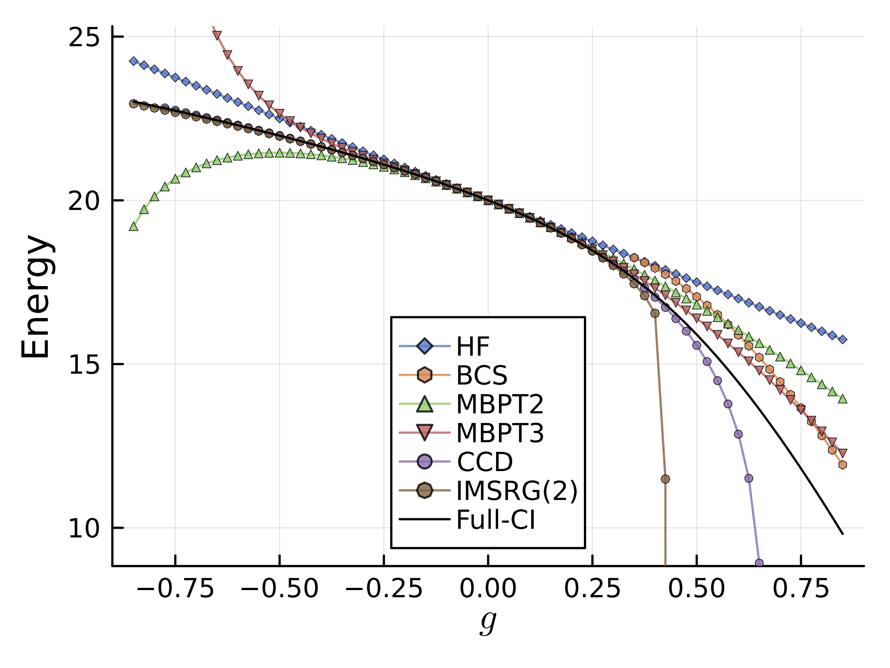

6. Coupled Cluster#
Coupled Cluster(CC)法は、CoesterとKümmelによって1950年代に提案されたアイデアに基づく手法である。
多体の波動関数を、ある参照状態に対して指数関数に乗せた相関演算子を作用させることで表現する。
原子核分野で提唱された後、原子・分子など量子化学の分野で大きく発展を遂げ、現在では量子化学計算の中でも最も精度の高い手法の一つとされている。
原子核分野では、現実的核力の強い斥力効果のために長年適用が難しかったが、核力のソフト化などの進展により、とくに2010年代以降、中重核などにおいて幅広く適用されるようになっている。
以下では、pairing Hamiltonianへの適用を念頭においた解説を行う。より詳細な説明については、MBPTの章でも挙げた本をはじめ以下の参考文献などを参照されたい:
Isaiah Shavitt and Rodney J. Bartlett, Many-Body Methods in Chemistry and Physics: MBPT and Coupled-Cluster Theory
Justin G. Lietz, Samuel Novario, Gustav R. Jansen, Gaute Hagen & Morten Hjorth-Jensen, Computational Nuclear Physics and Post Hartree-Fock Methods, part of the book series: Lecture Notes in Physics ((LNP,volume 936))
6.1. CCの概要#
Coupled-Cluster法は(例えば)Hartree-Fock法などのreference stateを用いて、波動関数をexponential ansatzとも呼ばれる形で以下のように展開する方法である。
\(\hat{T}\)はcluster operatorと呼ばれ、 particle-hole励起の数によって、下記のように分類される。
\(A\)は、最大のparitcle-hole励起の数であり、この数によってCC法の次数(order)が決まる。 量子化学や原子核物理でよく用いられるものは、\(A=2\)まで取ったCCSDや、 Triple(\(A=3\))の効果を部分的に取り入れたCCSD(T)などである。
exponential ansatzを用いることで、たとえクラスターオペレータ\(\hat{T}\)がtwo-bodyまでしか含まなくても、多体効果を取り入れることができる。
量子化学では、平衡状態にある分子のエネルギーを記述する際、99%がHartree-Fockで記述され、残りの1%がcorrelation energyとも呼ばれ、いわゆる化学的精度(chemical accuracy)を達成するためには、このcorrelation energyを適切に取り入れる必要がある。もちろん、Full-CI法などは厳密な取り扱いが可能であるが、指数関数的に計算量が増大するため、多くの場合はCC法が用いられ、しばし、CCSDやCCSD(T)がGold standardとして用いられる。
なお、CCSに対応する一粒子励起のみを含むものは、Hartree-Fock法と等価で、エネルギーを稼ぐことはできない(c.f. Brillouin's theorem)。
6.1.1. CIとの対比#
適当なreference stateを用いて、波動関数を展開するという点では、CI法と似ている。 CI法は、むしろ励起を線形に入れる方法とも言える。
一方でクラスターオペレータは、励起演算子(とそれに付随する振幅)の反交換性を加味すると
などとかける。励起の入り方に注目して項を整理すると
と、仮にクラスターオペレータを２次までで打ち切っても、高次の励起を取り込むことができる。
6.2. pairing HamiltonianのCCD計算#
pairing Hamiltonianの場合は、軌道内でペアが占有する場合のみしか相互作用が働かないため、 1p1h励起を2p2hにあわせて取り込んでもエネルギーを稼ぐことはできない。そこで、CCSDではなくCCDを考えれば良い。
以降では、2p2hに対応するcluster operator\(T_2\)だけを考える。
系のハミルトニアンは、reference stateのエネルギー
を用いて、
のように、正規順序化された(Normal ordered)項と参照状態エネルギーの和として表現できる。 \(E_\mathrm{CCD}=\bra{\Psi_\mathrm{CCD}} \hat{H} \ket{\Psi_\mathrm{CCD}}\)が、CCDによるエネルギーの推定値となる。
pairing Hamiltonianの場合は、particleとhole軌道がcoupleしないため、最後の一粒子エネルギーへの補正の項などが無視できるので、大幅に簡略化できる。
\(E_\mathrm{CCD}\)を求めるためには、\(\hat{T}_2\)の係数\(t^{ab}_{ij}\)を求める必要がある。 amplitude equationと呼ばれる方程式は、
となり、これを展開すると以下のような形になる。
インデックスは\(i<j\), \(a<b\)とし、\(i,j,\ldots\)はhole, \(a,b,\ldots\)はparticleを表す。
上の式をiterativeに解くことを考える。よくある方法は、\(t^{ab}_{ij}\)の初期値を 2nd orderのperturbation theoryの表式で与えることである。
pairing Hamiltonianの場合は、行列要素の評価が簡単なので、計算が簡素になるとはいえ、 元の表式のまま解こうとすると、粒子空孔の数に対して\(\mathcal{O}(n^4_pn^4_h)\)の計算量が必要になる。 そこで、少し工夫をする。
この中間生成物を用いて、元の式を書き換えると...
とt2 amplitudesを更新する式が得られる。 上では、適宜、\(t\)と\(v\)の行列要素の添字の交換に対する反対称性や、\(\hat{P}\)の性質,Fock行列がhole間・particle間で対角的であることを用いた。 \(\chi\)の更新を除けば、\(\mathcal{O}(n^2_pn^4_h)\)の計算量になる。 実際上は、最後の\(\langle kb | \chi | cj \rangle t^{ac}_{ik}\)の部分(\(\mathcal{O}(n^3_pn^3_h)\))が最も時間がかかるであろう。他の2体相互作用が効く項は、中間生成物を用いて行列演算にできるため、BLASなどを用いて高速に計算できる。
6.3. 結果の考察#

\(|g|<0.5\)程度の、比較的相互作用が弱い領域では、CCDの結果が最も厳密解に近い結果を与えている。
\(g<0\)の絶対値が大きい領域においても非常に高い精度を示している。
MBPTの結果が示唆するように、厳密解は符号の異なる寄与がキャンセレーションを起こしていると考えられる。
後で示すIM-SRG(2)との違いは、CCとIMSRGの各次数でどのダイアグラムが取り入れられるかの違いを反映していると解釈できる。
実際、IM-SRG(2)はCCDで入る(4次の)ダイアグラムの半数が取り入れられていないことから、truncationの入り方が結果に影響を与えていることがわかる。
美味しいものを後で食べる人と、すぐに食べる人の違いのようなものだ(?)。最後にはみんな同じものを食べるが、その過程が異なる。
6.4. 準粒子基底への拡張#
上で見たように、pairingが強い領域では、coupled cluster法は束縛エネルギーを過大評価してしまう。 これに対しては、準粒子基底への拡張や粒子数射影を用いて改善できることが知られている。
6.5. \(\clubsuit\)量子計算に関連した話題: Unitary Coupled-Cluster (UCC)#
Unitary Coupled Cluster (UCC)法はその名の通り、CC法のユニタリー版である。 exponential ansatzの肩に、\(\hat{T}\)と\(\hat{T}^\dagger\)を乗せることで、ユニタリー性を保つことができる。
\(\hat{T}\)のみを肩に乗せたCC法と比べて、UCC法は計算量的に不利である。 というのも、\(\hat{T}\)の場合は、BCH公式で計算すべき交換子が、 相互作用の次数(何体力までを陽に扱うか)に応じて、有限個になるのに対して、 \(\hat{T}-\hat{T}^\dagger\)の場合は、無限個の交換子を計算する必要が生じてしまう (もちろん実際には有限次までで打ち切る訳だが、その次数が大きくなると計算量が爆発する)。
古典計算機においては、UCC法はあまり実用的ではなかったものの、量子計算においてUCC法は重要な役割を果たす。